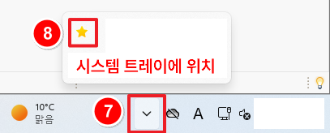

코딩 도우미(Coding_Helper)


프로그램 다운로드 및 실행 방법
- 1. 코딩 도우미 파일을 다운로드합니다.
- 2. 다운로드 시 "의심스러운 다운로드 차단됨" 메시지가 나타나면 해당 메시지를 클릭합니다.
해당 메세지가 안 나타난다면 4번으로 넘어가 주세요. - 3. "의심스러운 파일 다운로드" 버튼을 클릭합니다.
- 4. 프로그램 실행하면 "이 파일을 열기 전에 항상 확인" 체크를 해제합니다.
- 5. "실행" 버튼을 클릭합니다.
- 6. 프로그램 창의 "창 숨기기" 버튼을 클릭하여 사용합니다.
- 7. 프로그램은 윈도우 오른쪽 하단 시스템 트레이에 별모양 아이콘으로 표시됩니다.
- 8. 별모양 아이콘을 오른쪽 클릭 후 "창 열기"를 선택하면 프로그램 창이 다시 표시됩니다. 
- 9. '프로그램 종료'를 클릭하면 완전히 종료됩니다. 기능이 동작되길 원하시면 다시 실행시켜주세요.
[다운로드 방법]
※ (v1.0) insert키 ★ 기능 고정, 단축키 고정
※ (v2.0) insert키 대신 텍스트 문구 입력 가능, 단축키 2개 중 선택
※ (v2.0) insert키 대신 텍스트 문구 입력 가능, 단축키 2개 중 선택


※ 본 프로그램은 개발 중인 프로그램으로 보안 경고 메시지가 나타날 수 있습니다.
※ 단축키 변환 기능 외 다른 기능은 포함되어 있지 않습니다.
※ 단축키 변환 기능 외 다른 기능은 포함되어 있지 않습니다.
[실행방법]